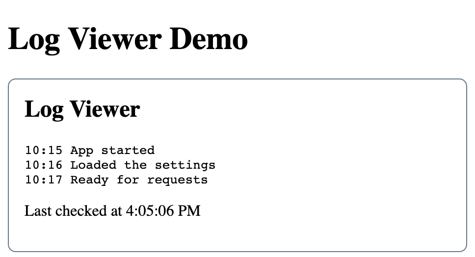

Build a <log-viewer> element that shows the
contents of a text file and checks for changes every five seconds. A
custom element is an HTML tag whose behavior you
define in JavaScript. You can use the tag more than once, and each
copy gets its own display.
Objectives
fetch() and check for
changes on a timer.You’ll use familiar HTML, CSS, and JavaScript. If you’ve written
a function and used querySelector() or
textContent, you have enough JavaScript to start. The
examples introduce classes and fetch() as you need
them.
Tools Needed
Create a folder called web19-log-viewer and open it
in your code editor. Create these
three files inside it. Keep them in the same folder.
web19-log-viewer/
index.html
log-viewer.js
log.txtPaste this into index.html. The script tag at
the bottom loads the JavaScript after the browser has read the
<log-viewer> tag.
<!doctype html>
<html lang="en">
<head>
<meta charset="utf-8">
<meta name="viewport" content="width=device-width, initial-scale=1">
<title>Log Viewer Demo</title>
</head>
<body>
<h1>Log Viewer Demo</h1>
<log-viewer></log-viewer>
<script src="log-viewer.js"></script>
</body>
</html>Paste these sample lines into log.txt and save it as plain text.
10:15 App started
10:16 Loaded the settings
10:17 Ready for requestsOpen the project through a local web server so
that fetch() can request log.txt over
HTTP. If your editor already has a local server, use it to serve
this folder. With Python 3, you can open a terminal in the project
folder and run one of these commands.
macOS or Linux
python3 -m http.server 8000 --bind 127.0.0.1Windows
py -m http.server 8000 --bind 127.0.0.1Leave the terminal running and open http://127.0.0.1:8000/ in your
browser. If port 8000 is in use, try 8001 in both the command and
the address. Check that your browser address starts with
http:// or https://. Double-clicking the
HTML file opens a file:// address, where the browser
can block the request for log.txt.
Check your work. You should see the Log
Viewer Demo heading. The custom tag is still empty because
log-viewer.js is empty.
Paste this into log-viewer.js, save it, and reload the page.
class LogViewer extends HTMLElement {
connectedCallback() {
this.textContent = 'The log viewer is ready.';
}
}
customElements.define('log-viewer', LogViewer);extends HTMLElement gives your class the
features of a regular HTML element.customElements.define() tells the browser which
class to use for the <log-viewer> tag. Use a
lowercase name with a hyphen, and register it once.connectedCallback() when the
element connects to the page. Inside the method, this
refers to the particular <log-viewer> being
connected.Check your work. Look for The log viewer is ready. below the heading. If the message is missing, make sure you saved the file and try a hard reload. If it still doesn’t appear, check the Console in your browser’s developer tools and confirm that the script filename and the custom tag match the code exactly.
Replace all of log-viewer.js with this version. Keep this version for the rest of the lesson.
const template = document.createElement('template');
template.innerHTML = `
<style>
:host {
display: block;
padding: 1rem;
border: 1px solid #65758b;
border-radius: 0.5rem;
}
h2 {
margin-top: 0;
}
pre {
white-space: pre-wrap;
overflow-wrap: anywhere;
}
</style>
<h2>Log Viewer</h2>
<pre class="log-content">Waiting for log data…</pre>
<p class="log-status">Status: Ready</p>
`;
class LogViewer extends HTMLElement {
constructor() {
super();
this.attachShadow({ mode: 'open' });
this.shadowRoot.append(template.content.cloneNode(true));
}
}
customElements.define('log-viewer', LogViewer);The backticks let you write the HTML and CSS across several
lines. A <template> holds that markup until you
use it. template.content.cloneNode(true) copies the
whole template, including its nested elements, so each viewer gets
its own copy.
The browser runs the constructor when it creates
the custom element. super() sets up the built-in HTML
element and must run before you use this.
attachShadow() gives the element its own DOM tree,
called the shadow DOM. The template’s styles apply
inside that tree, and :host styles the
<log-viewer> tag itself. Page-level CSS selectors
do not reach inside the shadow tree, though inherited styles such as
fonts can carry through. With mode: 'open', you can
access the tree as this.shadowRoot.
Check your work. Save and reload. You should see
a bordered box with Log Viewer, Waiting for
log data…, and Status: Ready. Inspect
<log-viewer> in your browser’s developer tools
and expand #shadow-root to see the copied markup.
In log-viewer.js, paste these two methods
inside the LogViewer class, after the
constructor and before the class’s final closing brace. Leave
customElements.define() below the class.
connectedCallback() {
this.loadLog();
}
async loadLog() {
const content = this.shadowRoot.querySelector('.log-content');
const status = this.shadowRoot.querySelector('.log-status');
try {
const response = await fetch('log.txt', { cache: 'no-store' });
if (!response.ok) {
throw new Error(`HTTP ${response.status}`);
}
const text = await response.text();
content.textContent = text || 'The log file is empty.';
const time = new Date().toLocaleTimeString();
status.textContent = `Last checked at ${time}`;
} catch (error) {
content.textContent = 'Could not load log.txt.';
status.textContent = `Error: ${error.message}`;
}
}connectedCallback() starts the first load.
this.shadowRoot.querySelector() finds the two places in
this viewer that need updating.async lets this method use await. The
first await waits for the server’s response. The second
waits for the body of that response as text.
cache: 'no-store' asks the browser to skip its cached
copy.404. Check response.ok and throw an error
if the status indicates failure. The catch block shows
the problem in the viewer.textContent displays the log as plain text,
including any angle brackets. The <pre> element
preserves line breaks.Check your work. Save and reload. You should see
the three log entries and Last checked at with the
current time. If you get a 404, open
log.txt directly by changing the end of your browser
address to /log.txt on the Python server. Check the
folder and spelling, including whether the editor saved it as
log.txt.txt.
Replace only the
connectedCallback() method with the two methods below.
Leave the constructor and loadLog() in place.
connectedCallback() {
this.loadLog();
this.intervalId = setInterval(() => this.loadLog(), 5000);
}
disconnectedCallback() {
clearInterval(this.intervalId);
}setInterval() schedules the next check and gives you
a timer ID. The browser calls disconnectedCallback()
when the component leaves the page. Use the saved ID with
clearInterval() to stop future checks.
A slow request can take longer than five seconds. To skip the
next check while a request is still running, add these lines at the
start of loadLog(), before the
querySelector() lines.
if (this.loading) return;
this.loading = true;Then replace the catch block and its preceding brace
with the lines below. The finally block runs after
success or failure, so the next scheduled check can start a new
request.
} catch (error) {
content.textContent = 'Could not load log.txt.';
status.textContent = `Error: ${error.message}`;
} finally {
this.loading = false;
}Check your work. Save log-viewer.js
and reload once. With the browser tab open, add a line to
log.txt and save it. Within about five seconds, the
new line should appear on its own. If your editor reloads the page
when you save, switch to the Python server for this check.
Here’s the finished viewer with the original sample log.

log.txt to
log-backup.txt. Wait for the viewer to show an error,
then rename the file back. The log should reappear on the next
successful check.<log-viewer></log-viewer> line in
index.html before the script tag. Reload and check
that both boxes display the log.:host rule. Reload and look for the new
color on both boxes.When you’re done, stop the Python server by pressing Ctrl+C in the terminal where you started it.
You turned <log-viewer> into a reusable HTML
tag by registering a JavaScript class. Each viewer copies the same
template into its own shadow DOM, so it has its own content and
styles. You used fetch() to read a text file, refreshed
it on a timer, and stopped the timer when the viewer left the page.
Adding a second tag showed how you can reuse the whole component
with one line of HTML.